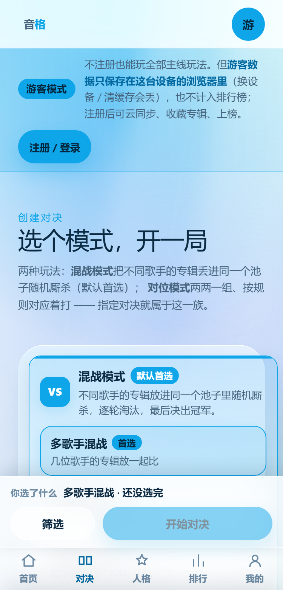
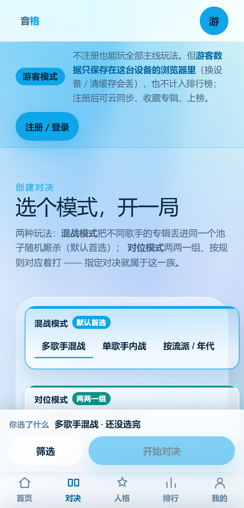
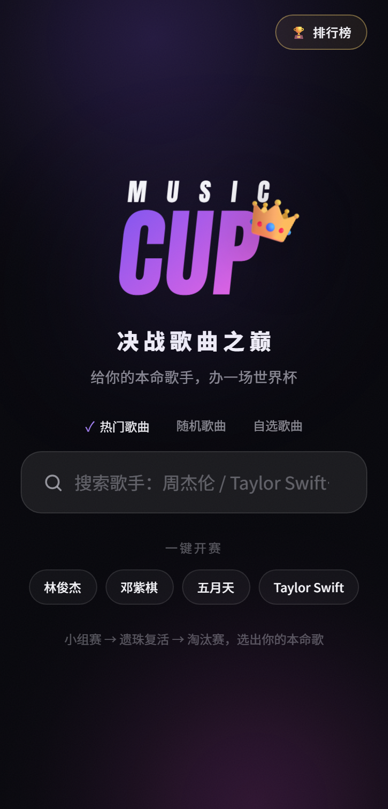
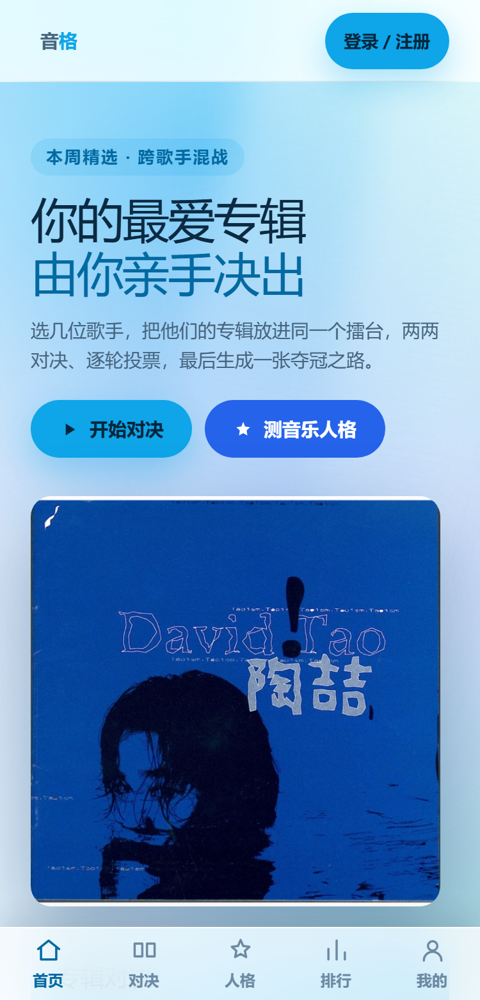

两个待拍板方案 · 2026-10-17 · 真机对比（不是示意图）
一行文字 tab 长什么样，以及我上一句话说错了什么
你要看"一行文字 tab"的实机样子、又问"首屏只放应用是啥意思"。
这两张对比图都是用 Playwright 给真实页面注入改造样式后截的（同一页、同一份数据，没动源码）。
另外：量完数据我发现我上一轮关于首页的那条建议前提是错的，一起纠正。
1方案一：创建页模式选择 —— 4 张大卡 vs 一行文字 tab
A · 现状（你已经看过这版）

两族大框 + 6 张模式卡，每张卡有标题 + 徽标 + 一行描述。
· 大厅总高 659px（混战族 396 + 对位族 249）
· 每张模式卡 66px 高
· 首屏只能完整看到 3 / 6 个模式（截图里连第 2 张都被切一半）
· 页面总高 1540px
B · 提案：一行文字 tab

族标题压成一行小标签，模式变成文字 tab，选中项品牌色下划线。
· 大厅总高 659 → 214px（省 445px）
· 每个 tab 66 → 36px
· 6 / 6 个模式首屏全可见
· 选中态验证过还在：onCount = 1，选中的是「多歌手混战」
✅ 省 445px 垂直空间
✅ 6 个模式一屏看完
✅ 选中态/族色/徽标全部保留
⚠️ 代价：每行的描述文字藏起来了
代价要说清楚：现在每张卡上那行描述（"几位歌手的专辑放一起比" / "第 1 张打第 1 张…"）
在提案里被藏掉了 —— 一屏只留模式名。MUSIC CUP 也是这么干的（它的 tab 只有名字）。
如果你觉得这些描述对新手有用，可以折中：tab 只留名字，但选中某个模式后，
在下方用一行小字显示它的描述（既省空间又不丢信息）。这条也可以让你定。
怎么做出这两张图的：没有改一行源码。用 Playwright 的 addStyleTag
把改造样式注入真实页面再截图。注入的选择器特意写成 .create .lobbybox .lb-modes（3 个类），
因为项目里是 scoped 样式（编译后带 [data-v-x]，2 个类）—— 特异性不够注入会被打回来，
这点上一轮已经栽过一次。
2方案二：「首屏只放应用」—— 我上一条说得不对，先纠正
更正：我上一轮写"我们首页把 6 组内容全堆在一屏里，一屏放不下就得滚"——
这句是错的。刚量的真实数据：首页第一屏本来就只有 hero 一块，
其余 5 块（两个大卡 / 共建条 / 专辑墙 / 榜单 / 面板）全都在折叠线以下。
所以"把内容挪出首屏"这件事没有可做的—— 它已经是那个样子了。
| 首屏内容块 | 起始 y | 高度 | 在首屏内？ |
|---|
| hero（主张 + 两个主动作 + 一张封面） | 108 | 599 | ✅ 是（108~707，正好一屏） |
| duo（两个大入口卡） | 731 | 343 | ↓ 折叠线下 |
| poolbar（共建专辑墙条） | 1099 | 144 | ↓ 折叠线下 |
| shelf / list / panel（榜单等） | 1267+ | — | ↓ 折叠线下 |
页面总高 2655px = 3.4 屏；首屏用户第一眼要读 72 字。
这个结构本身是健康的，不用改。
但量数据时发现了真正值得学的那件事 —— 不是"首屏放什么"，而是
"从打开到投出第一票，要点几下"：
MUSIC CUP（实测）
点「林俊杰」→直接开打

它的首屏有搜索框（y=452）和「一键开赛」4 个歌手 chip（y=522）——
所以点一下就进入第一场对决。模式切换（热门/随机/自选）只是三个文字 tab。
我们（实测）
开始对决→选模式→点歌手→加入→开始对决

首屏只有 hero 和两个按钮，没有搜索框。
想直接开打，得先离开首页进创建页；默认模式已是"多歌手混战"，
所以实际是 4 次点击才能投出第一票（开始对决 → 点周杰伦 → 加入 → 开始对决）。
所以方案二我改个提法（原来那条作废）：
不是"首屏只放应用"，而是 "要不要在首页加一个一键开赛区" ——
一个搜索框 + 4 个热门歌手 chip，点一下直接开局（沿用默认的"多歌手混战"模式）。
这样把 4 次点击压到 1 次，和 MUSIC CUP 打平。
代价：首页首屏要多放一块内容，hero 的封面可能要缩小或挪位；
而且这动到你已经看过的首页，按规矩等你点头。
3两件都给你标了代价，你挑
| # | 方案 | 我的倾向 | 收益 / 代价 |
|---|
| 1 | 创建页模式改一行文字 tab | 建议改 |
收益：省 445px、6 个模式一屏看完、和 MUSIC CUP 一致的手感
代价：模式描述文字藏掉（可折中：选中后在下方显示一行描述） |
| 2 | 首页加「一键开赛」区
（搜索框 + 热门歌手 chip） | 建议改，但要你定 |
收益：开局从 4 次点击 → 1 次，和 MUSIC CUP 打平；新手第一眼就知道"能直接玩"
代价：首页首屏多一块内容，hero 封面要缩小或挪位；动到你看过的首页 |
| — | 两个都不改，先去做 T3 间距刻度统一 | 也行 |
把几十处刻度外 margin 一次收干净（那是剩余 33 项体检问题的大头），但这两个体验差距留着 |
你回一句"改 1" / "改 1+2" / "先不动"就行，我立刻动手并跑同一套探针复验
（布局体检 + 桌面端 A/B + 三档断点 + 手机端到端），改完再把对比图更新成"改后实测"。